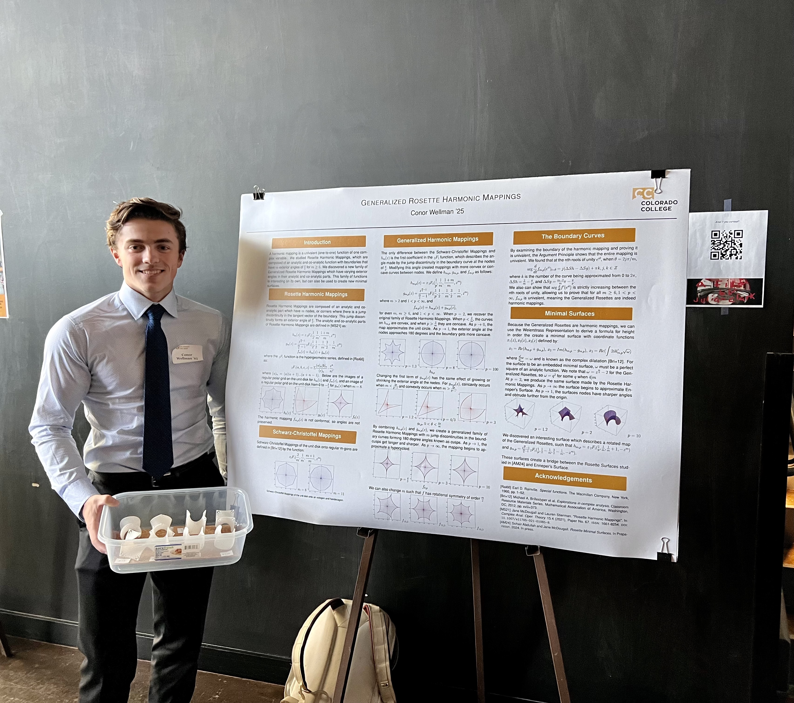

Conor Wellman
I'm an aspiring software engineer studying Computer Science and Mathematics at Colorado College. I've worked as a software engineering intern at Connamara Technologies, and as a research assistant in the field of complex analysis, where I discovered a new family of harmonic mappings and minimal surfaces. I'm looking forward to working at NIST this summer as part of the SURF program to develop software for the atomic clock system! In my free time, I pursue rock climbing at a semi-professional level and play guitar.

Projects
Email: conwellman@gmail.com
Other
Awards
Phi Beta Kappa Honor Society Member
Dean's List Student
USA Climbing Collegiate Ambassador Scholarship
Colorado College Leadership Scholarship
Mathematics
In the summer of 2023, I worked with Professor Jane McDougall to research Rosette Harmonic Mappings within the field of Complex Analysis. During this reasearch, I was able to discover and print a new family of Generalized Rosette Harmonic Mappings, which I have presented at various symposiums in Colorado.
Climbing
I spend most of my free time focusing on my climbing career. I've been lucky enough to compete in national finals for lead climbing and bouldering, earning an alternate spot on the US Team and a pass down invite to world championships. Outdoors, I have climbed routes up to V14 and 5.14, my proudest being "The Multiverse" (V14) and "The Phoenix" (V14). I am the first male from Illinois to achieve boulders of this difficulty.